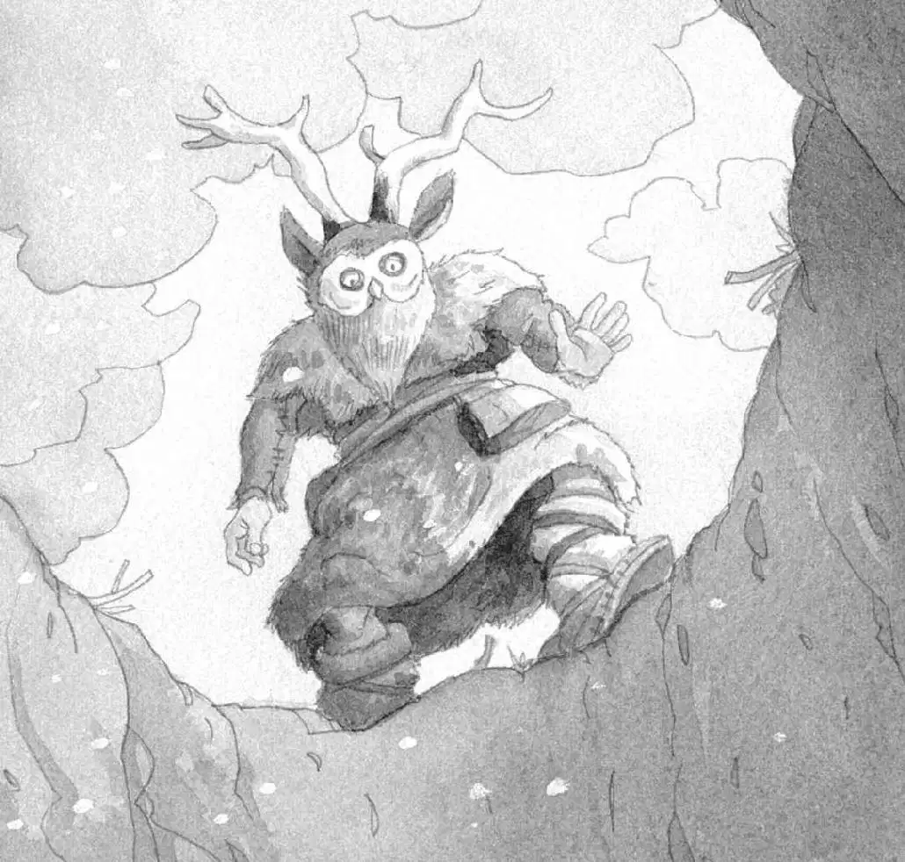

“Peanut’s tracks,” said Annie. “We have to find her before she freezes.”
She wrapped her reindeer coat around her and headed across the snow.
Jack pulled on his backpack and followed.
The mouse’s tracks led them between the fallen rocks and back onto the open plain.
The wind blew harder. Snow swirled over the ground, covering the tiny footprints.
“I can’t see them anymore!” wailed Annie.
She and Jack now stood in the middle of the plain. They stared at the windswept snow.
The mouse’s tracks had vanished.
“Yikes,” whispered Annie, staring up.
Jack followed her gaze. On one of the cliffs was a tiger. A giant tiger with two long, sharp fangs.
“A sabertooth,” said Jack.
“I hope he doesn’t see us,” whispered Annie.
“Me too,” Jack whispered back. “We’d better head back to the tree house.”
Jack and Annie stepped very softly across the snow. Then Jack glanced back at the cliff.
The sabertooth was gone.
“Oh man,” he said. “Where is he?”
“Run to the trees!” said Annie.
He and Annie started running. They ran over the snowy plain, heading toward the tall, bare trees in the distance.
Suddenly Jack heard a crack.
The ground caved in, and Jack went with it.
Annie fell beside him.
They crashed down onto a heap of branches, snow, and earth.
They struggled to stand. Jack pushed his glasses into place.
“You all right?” he asked Annie.
“Yes,” she said.
They both looked up. They were in a deep hole. All Jack could see were gray clouds moving overhead.
“This is a trap,” Jack said. “The Cro-Magnons must have put branches over this hole. Then the snow hid the branches. So we didn’t see them.”
“There’s no way out,” said Annie.
She was right. They were helpless. The pit was too deep to climb out of.
“I feel like a trapped animal,” Annie said.
“Me too,” said Jack.
He heard a yowl in the distance.
“The sabertooth!” whispered Annie.
Jack pulled out the Ice Age book. He found a picture of the sabertooth. He read:
The sabertooth was the fiercest beast of the Ice Age. It attacked humans as well as woolly mammoths and other large animals.
“Oh brother,” said Jack.
“Listen!” Annie grabbed him.
“What?” Jack jumped.
“I hear music.”
Jack listened. But all he heard was the wind.
“You hear it?” said Annie.
“No,” said Jack.
“Listen carefully.”
He closed his eyes. He listened very carefully.
He heard the wind. But this time he heard another sound, too.
Strange, haunting music.
“Ahhh!” cried Annie.
Jack opened his eyes.
Staring down at them was a figure wearing reindeer antlers and an owl mask.

“The sorcerer,” whispered Jack.
Squeak.
Peanut peered down at them, too!